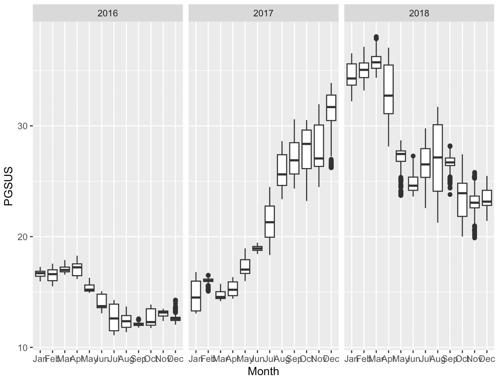

IE 423: QUALITY ENGINEERING
Project Part 1
Instructor: Mustafa Baydoğan
Date of Submission: 02.11.23
Prepared by:
| İbrahim Emre Köksal |
2019402171 |
| Yusuf Ali Bozkurt |
2019402021 |
| İdil Zeynep Ceylan |
2020402033 |
Introduction
For the sake of the analysis, the data in the wide format is chosen
where rows represent date & time and columns represent different
stocks. In this structure, closing prices of the same stock in different
moments of time are listed in the same column. This version is chosen
since this structure makes it easier to carry out operations such as
filtering, aggregating and transforming on large amounts of data.
50 different companies, which are publicly traded in Borsa İstanbul,
are provided to examine stock prices. Akbank(AKBNK) and Garanti(GARAN)
are chosen from the banking, Türk Hava Yolları(THYAO) and Pegasus(PGSUS)
are chosen from the aviation, Aselsan(ASELS) is chosen from the defense
industry and the Banvit(BANVT) is chosen from the food industry to be
able to comprehend different sectors. Also, some comparisons were made
to clearly observe trend effects.
(https://www.thedataschool.com.au/mipadmin/the-shape-of-data-long-vs-wide/)
library(zoo)
library(lubridate)
library(dplyr)
library(ggplot2)
# Assuming your DataFrame is named "data" and the timestamp column is named "timestamp"
data <- read.csv("Desktop/all_ticks_wide.csv.gz",sep = ",")
#AKBANK
# Assuming your DataFrame is named "data" and the timestamp column is named "timestamp"
akbank <- data[,c("timestamp","AKBNK")]
akbank2yil <- akbank[1883:22132,]
akbank2yil$AKBNK <- na.approx(akbank2yil$AKBNK)
# A function to approximate na's in data
sum(is.na(akbank2yil$timestamp))
# Extract the month and year
akbank2yil <- akbank2yil %>%
mutate(year = year(timestamp), month = month(timestamp))
# Create separate boxplots for each combination of month and year
ggplot(akbank2yil, aes(x = factor(month, labels = month.abb), y = AKBNK)) +
geom_boxplot() +
labs(x = "Month", y = "AKBNK") +
facet_wrap(~year, scales = "free_x")
Results:
Boxplots
for Akbank for January 2013-December 2015:
The decline at the end of 2013 in Akbank stock prices is likely due
to a number of factors including the global financial crisis, the
political uncertainty in Turkey, and the depreciation of the Turkish
lira. In 2013, a total of 418 million dollars of net foreign outflow was
observed from the Borsa Istanbul. The highest net sales by foreign
investors were in the Banking Index, with 1.221 billion dollars. Foreign
investors who had 20% share in the total trading volume of the BIST all,
held a 66% share in the market value at the end of 2012, but this share
fell to 63% at the end of 2013. The Borsa Istanbul, which finished 2012
as the second-best performing stock market in the world, ended 2013 with
a 23% decline in market value in dollar terms, diverging negatively from
global markets. (https://www.bloomberght.com/haberler/haber/1495099-bistten-2013te-418-milyon-dolar-yabanci-cikisi-oldu)
In 2013, Turkey was facing several foreign policy issues due to the
civil war in Syria, the war in Libya and the emergence of Islamic State
of Iraq and Syria (ISIS). As a result of the combined effects of these
variables, Turkey experienced a significant degree of political
uncertainty. Foreign investors started liquidating their holdings in
Turkey because they were concerned about the government's capacity to
handle the country's economic and foreign policy issues. The Turkish
currency and the Borsa Istanbul stock market both declined as a result
of this.
In May 2013, large scale protests broke out first in Istanbul and
then other cities in opposition to a government plan to renovate Taksim
district’s popular public space, Gezi Parkı. The effect of this can also
be observed in the decrease of the average stock price values after may.
The trend graph for the word “gezi” shows the huge increase in the
search amount around May 2013:
The 24th general elections of the Republic of Turkey were held on
June 7, 2015 to determine the new members of the Turkish Grand National
Assembly. The result of these elections can be a possible reason for the
decline of Akbank’s stock prices starting from June 2015. In these
elections, AKP, which had governed Turkey since 2002, lost its majority
in parliament for the first time. Due to this, investors sold up their
Turkish assets as the political and economic image in Turkey became
unstable.
The
trend for the word “genel seçim” can be observed in the following
graph:
# Flag outliers based on the 3-sigma rule
akbank2yil <- akbank2yil %>%
left_join(monthly_summary, by = c("year", "month")) %>%
mutate(outlier = ifelse(AKBNK < (mean_value - 3 * sd_value) | AKBNK > (mean_value + 3 * sd_value), "Outlier", "Not Outlier"))
outliers_akbank <- akbank2yil[akbank2yil$outlier == "Outlier", ]
outliers_akbank
#GARAN
# Assuming your DataFrame is named "data" and the timestamp column is named "timestamp"
garan <- data[,c("timestamp","GARAN")]
garan2yil <- garan[1883:22132,]
garan2yil$GARAN <- na.approx(garan2yil$GARAN)
# A function to approximate na's in data
sum(is.na(garan2yil$timestamp))
# Extract the month and year
garan2yil <- garan2yil %>%
mutate(year = year(timestamp), month = month(timestamp))
# Create separate boxplots for each combination of month and year
ggplot(garan2yil, aes(x = factor(month, labels = month.abb), y = GARAN)) +
geom_boxplot() +
labs(x = "Month", y = "GARAN") +
facet_wrap(~year, scales = "free_x")
# Assuming your DataFrame is named "garan2yil" with columns "timestamp" and "GARAN"
garan2yil <- garan2yil %>%
mutate(timestamp = ymd_hms(timestamp, tz = "UTC")) %>%
mutate(year = year(timestamp), month = month(timestamp))
# Group by year and month, calculate mean and standard deviation
monthly_summary <- garan2yil %>%
group_by(year, month, .groups = "drop") %>%
summarize(
mean_value = mean(GARAN, na.rm = TRUE),
sd_value = sd(GARAN, na.rm = TRUE)
)
# Flag outliers based on the 3-sigma rule
garan2yil <- garan2yil %>%
left_join(monthly_summary, by = c("year", "month")) %>%
mutate(outlier = ifelse(GARAN < (mean_value - 3 * sd_value) | GARAN > (mean_value + 3 * sd_value), "Outlier", "Not Outlier"))
outliers_garan <- garan2yil[garan2yil$outlier == "Outlier", ]
outliers_garan
Boxplots for Garanti for January 2013-December 2015:
The outliers and the decline at the end of 2013 in Garanti
stock prices can be explained by the reasons regarding the political and
economic uncertainties of Turkey around those times due to several
factors explained above.
The lower outliers in December 2014 can be explained by the sales of
the majority of the Garanti Bank's states to BBVA. In June 2023, BBVA,
one of the largest banks in Spain, acquired a 14.89% stake in Garanti
Bankası from Doğuş Group for 5 billion 497 million TL (2.5 billion
dollars). With this acquisition, BBVA increased its stake in Garanti
Bankası from 25.01% to 39.9% and became the majority shareholder in the
bank.
([https://www.sozcu.com.tr/2014/ekonomi/dev-banka-satildi-652728/]{.underline})
The
trend for the word "xbank" which refers to the index for the banking
sector in Borsa Istanbul can be observed by the following graph:
The increase in the trend around the end of 2014 can be
explained by the sales of Garanti Bank's states to BBVA.
#ASELS
# Assuming your DataFrame is named "data" and the timestamp column is named "timestamp"
asels <- data[,c("timestamp","ASELS")]
asels2yil <- asels[22134:45588,]
asels2yil$ASELS <- na.approx(asels2yil$ASELS)
# A function to approximate na's in data
sum(is.na(asels2yil$timestamp))
# Extract the month and year
asels2yil <- asels2yil %>%
mutate(year = year(timestamp), month = month(timestamp))
# Create separate boxplots for each combination of month and year
ggplot(asels2yil, aes(x = factor(month, labels = month.abb), y = ASELS)) +
geom_boxplot() +
labs(x = "Month", y = "ASELS") +
facet_wrap(~year, scales = "free_x")
# Assuming your DataFrame is named "asels2yil" with columns "timestamp" and "ASELS"
asels2yil <- asels2yil %>%
mutate(timestamp = ymd_hms(timestamp, tz = "UTC")) %>%
mutate(year = year(timestamp), month = month(timestamp))
# Group by year and month, calculate mean and standard deviation
monthly_summary <- asels2yil %>%
group_by(year, month, .groups = "drop") %>%
summarize(
mean_value = mean(ASELS, na.rm = TRUE),
sd_value = sd(ASELS, na.rm = TRUE)
)
# Flag outliers based on the 3-sigma rule
asels2yil <- asels2yil %>%
left_join(monthly_summary, by = c("year", "month")) %>%
mutate(outlier = ifelse(ASELS < (mean_value - 3 * sd_value) | ASELS > (mean_value + 3 * sd_value), "Outlier", "Not Outlier"))
outliers_asels <- asels2yil[asels2yil$outlier == "Outlier", ]
outliers_asels
Boxplots for Aselsan for January 2016-December 2018:
In November 2017, Aselsan which develops technology, electronic
devices and systems for the defense industry became the most valuable
stock in Borsa İstanbul. This can be observed in the rapid increase in
the company's stock prices. The company won the title of the largest
public company by market value and replaced the banks that have been
sitting in the leadership chair in terms of market value for many years
in Borsa İstanbul.
([https://www.bloomberght.com/haberler/haber/2069658-aselsan-borsa-istanbul-un-en-degerlisi-oldu]{.underline})
Being one of the top defense technology companies in Turkey,
Aselsan's rise to the top of Borsa Istanbul may be attributed to two
main factors: its outstanding performance and the increasing importance
of defense technology. The company has a strong track record of
innovation and developing new products and services. As a result,
Aselsan has been able to increase its revenue and profits and secure new
contracts. Government investment in the military has driven the
importance of defense technologies in the global economy. In recent
years, the Turkish government has prioritized the defense industry. As a
result, the government is now spending more on defense, which is
advantageous for Aselsan.
The
increase in the trends for the word "aselsan" can be observed in the
following graph in November 2017:
#PGSUS
# Assuming your DataFrame is named "data" and the timestamp column is named "timestamp"
pgsus <- data[,c("timestamp","PGSUS")]
pgsus2yil <- pgsus[22134:45588,]
pgsus2yil$PGSUS <- na.approx(pgsus2yil$PGSUS)
# A function to approximate na's in data
sum(is.na(pgsus2yil$timestamp))
# Extract the month and year
pgsus2yil <- pgsus2yil %>%
mutate(year = year(timestamp), month = month(timestamp))
# Create separate boxplots for each combination of month and year
ggplot(pgsus2yil, aes(x = factor(month, labels = month.abb), y = PGSUS)) +
geom_boxplot() +
labs(x = "Month", y = "PGSUS") +
facet_wrap(~year, scales = "free_x")
# Assuming your DataFrame is named "pgsus2yil" with columns "timestamp" and "PGSUS"
pgsus2yil <- pgsus2yil %>%
mutate(timestamp = ymd_hms(timestamp, tz = "UTC")) %>%
mutate(year = year(timestamp), month = month(timestamp))
# Group by year and month, calculate mean and standard deviation
monthly_summary <- pgsus2yil %>%
group_by(year, month, .groups = "drop") %>%
summarize(
mean_value = mean(PGSUS, na.rm = TRUE),
sd_value = sd(PGSUS, na.rm = TRUE)
)
# Flag outliers based on the 3-sigma rule
pgsus2yil <- pgsus2yil %>%
left_join(monthly_summary, by = c("year", "month")) %>%
mutate(outlier = ifelse(PGSUS < (mean_value - 3 * sd_value) | PGSUS > (mean_value + 3 * sd_value), "Outlier", "Not Outlier"))
outliers_pgsus <- pgsus2yil[pgsus2yil$outlier == "Outlier", ]
outliers_pgsus
Boxplots for Pegasus for January 2016-December 2018:

On January 13, 2018, at Trabzon airport in Turkey, Pegasus
Airlines Flight, a Boeing 737-800, slid off the runway and partially
fell down a cliff. 6 crew members and 162 passengers were on board, and
every passenger was successfully evacuated. After being declared
unrepairable, the aircraft was signed off. Although the exact cause of
the accident remains under investigation, it is thought that a number of
variables, including pilot error, tailwind, and wet runway conditions,
played a role. Accident may have raised concerns about the safety of the
Pegasus airline and damaged its reputation. The low numbers of outliers
in the months of May, September and November are probably connected with
this incident.
The trend graph below showing the frequency of the search for words
"uçak kazası" matches with the above information. It has a steep
increase around November where a great number of outliers occur in the
above graph.
#THYAO
# Assuming your DataFrame is named "data" and the timestamp column is named "timestamp"
thyao <- data[,c("timestamp","THYAO")]
thyao2yil <- thyao[22134:45588,]
thyao2yil$THYAO <- na.approx(thyao2yil$THYAO)
# A function to approximate na's in data
sum(is.na(thyao2yil$timestamp))
# Extract the month and year
thyao2yil <- thyao2yil %>%
mutate(year = year(timestamp), month = month(timestamp))
# Create separate boxplots for each combination of month and year
ggplot(thyao2yil, aes(x = factor(month, labels = month.abb), y = THYAO)) +
geom_boxplot() +
labs(x = "Month", y = "THYAO") +
facet_wrap(~year, scales = "free_x")
# Assuming your DataFrame is named "thyao2yil" with columns "timestamp" and "THYAO"
thyao2yil <- thyao2yil %>%
mutate(timestamp = ymd_hms(timestamp, tz = "UTC")) %>%
mutate(year = year(timestamp), month = month(timestamp))
# Group by year and month, calculate mean and standard deviation
monthly_summary <- thyao2yil %>%
group_by(year, month, .groups = "drop") %>%
summarize(
mean_value = mean(THYAO, na.rm = TRUE),
sd_value = sd(THYAO, na.rm = TRUE)
)
# Flag outliers based on the 3-sigma rule
thyao2yil <- thyao2yil %>%
left_join(monthly_summary, by = c("year", "month")) %>%
mutate(outlier = ifelse(THYAO < (mean_value - 3 * sd_value) | THYAO > (mean_value + 3 * sd_value), "Outlier", "Not Outlier"))
outliers_thyao <- thyao2yil[thyao2yil$outlier == "Outlier", ]
outliers_thyao
Boxplots for THY for January 2016-December 2018:

The total number of passengers, including domestic and
international flights, which was 173,743,537 in 2016, increased by 11.1%
to reach 193,045,343 in 2017. In 2017, Turkish Airlines (including
Anadolu Jet) served 56% of the domestic passenger market. The increase
in the stock prices of THY can be explained by these factors. The
elements that contributed to THY's stock price growth included the
company's expansion plans, solid financial performance, dominance of the
domestic passenger market, and strong demand for its services.
([https://www.dhmi.gov.tr/Lists/HavaYoluSektorRaporlari/Attachments/11/2017%20Sekt%C3%B6r%20Raporu.pdf]{.underline})
In addition to that, the high values of outliers in the box plot for
THY in February 2018 can be explained by the accident of Pegasus flight
in January 2018. This event has potentially a positive effect on the
sudden increase of the stock prices of THY in February.
The fluctuating value for the stock prices of THY during 2018
can also be observed in fluctuations in the search amount of THY during
that year.
#BANVT
# Assuming your DataFrame is named "data" and the timestamp column is named "timestamp"
banvt <- data[,c("timestamp","BANVT")]
banvt2yil <- banvt[22134:45588,]
banvt2yil$BANVT <- na.approx(banvt2yil$BANVT)
# A function to approximate na's in data
sum(is.na(banvt2yil$timestamp))
# Extract the month and year
banvt2yil <- banvt2yil %>%
mutate(year = year(timestamp), month = month(timestamp))
# Create separate boxplots for each combination of month and year
ggplot(banvt2yil, aes(x = factor(month, labels = month.abb), y = BANVT)) +
geom_boxplot() +
labs(x = "Month", y = "BANVT") +
facet_wrap(~year, scales = "free_x")
# Assuming your DataFrame is named "banvt2yil" with columns "timestamp" and "BANVT"
banvt2yil <- banvt2yil %>%
mutate(timestamp = ymd_hms(timestamp, tz = "UTC")) %>%
mutate(year = year(timestamp), month = month(timestamp))
# Group by year and month, calculate mean and standard deviation
monthly_summary <- banvt2yil %>%
group_by(year, month, .groups = "drop") %>%
summarize(
mean_value = mean(BANVT, na.rm = TRUE),
sd_value = sd(BANVT, na.rm = TRUE)
)
# Flag outliers based on the 3-sigma rule
banvt2yil <- banvt2yil %>%
left_join(monthly_summary, by = c("year", "month")) %>%
mutate(outlier = ifelse(BANVT < (mean_value - 3 * sd_value) | BANVT > (mean_value + 3 * sd_value), "Outlier", "Not Outlier"))
outliers_banvt <- banvt2yil[banvt2yil$outlier == "Outlier", ]
outliers_banvt
Boxplots for Banvit for January 2016-December 2018:
The rising bird flu news from different parts of the world in
2018 may have caused a decline in Banvit's stock market values through
the middle of 2018. The outbreak was caused by a virus, which is highly
contagious and can be deadly to birds. The virus is thought to have
originated in China and then spread to other parts of the world through
the movement of poultry and wild birds. The outbreak also raised
concerns about the potential for human infection. In 2018, there were
over 850 cases of human infection with avian influenza A(H5N6) virus
reported worldwide, of which over 450 were fatal.
([https://www.woah.org/app/uploads/2022/03/awada-et-al-2018-transboundary-and-emerging-diseases-2.pdf]{.underline})
The trend chart for the search of "kuş gribi" is in accordance
with the steep decrease in the stock prices of Banvit. The search for
bird flu increased in the first months of 2018 and the stock prices
started to decrease significantly right after January 2018.
The low values of outliers that are observed in September 2018 in the
stock prices of Banvit might be related with the food crisis in the
world going on at those times. The 2019 Global Report on Food Crises
estimates that 113 million people in 53 countries suffered from acute
hunger in 2018 to a level where they needed immediate humanitarian help.
Due to the global food crisis, higher input costs, supply chain
disruptions, and investor sentiment could weigh on the stock prices of
Banvit. The decrease in stock prices of Banvit through 2018 might also
be related to this fact.
([https://www.ifpri.org/blog/global-report-food-crises-113-million-people-53-countries-experienced-acute-hunger-2018#:~:text=In%202018%2C%20an%20estimated%20113,people%2C%20it%20remains%20unacceptably%20high]{.underline}.)
The increase in the frequency of the search for the term "gıda krizi"
in the first months of 2018 is in accordance with the decreasing stock
price values of Banvit in the first half of 2018.
Conclusion
In order to see the correlations between anomalies in various stocks
we need to consider general events that have the possibility to
influence the prices of those stocks directly or indirectly through the
economic and political conditions in Turkey. For the banking sector, box
plots of Akbank and Garanti show a similar pattern between January
2013-December 2015: the prices follow a decreasing trend in the second
half of 2013, then an increasing trend after the first months of 2014
and finally a decreasing trend towards the end of 2015. The outliers are
also observed at similar time periods: both Garanti and Akbank have low
valued outliers at the end of 2013 and 2014, around June 2015, and late
2015. Since these two firms are both functioning in the banking industry
in Turkey, it is not surprising that they are affected in a similar way
from the worldwide financial crisis, Turkey's instability in politics,
and the lira's depreciation in value.
The outliers in Aselsan and Pegasus stock prices in the middle of
2018 also show a correlation. A possible event that might have caused a
great number of outliers for the stock prices of both companies is the
general election of 24 June 2018 that was held to elect the president of
Turkey. The elections were originally scheduled for 3 November 2019,
however the government declared on 18 April 2018 that there will be an
early election. A possible impact of this early call is a decrease in
the stock prices which can be seen in the box plot diagrams of Aselsan,
Pegasus and also THY. For all three of these firms, the stock prices
show a steep decrease right after April 2018.